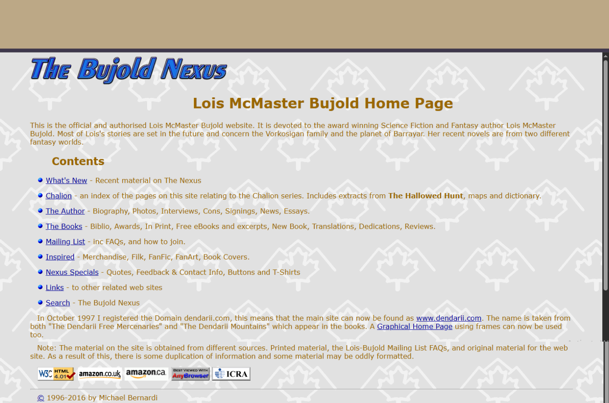
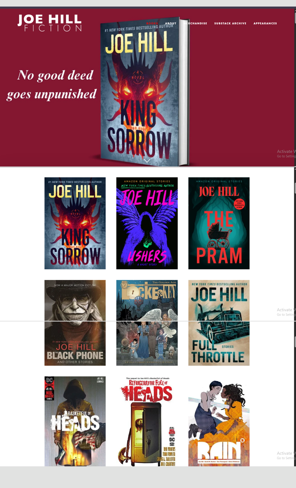
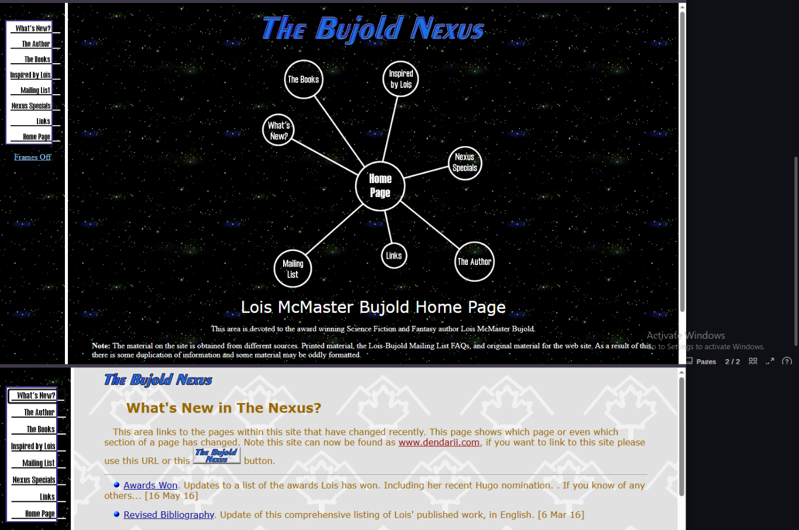

Introduction
Color plays an important role in web design because it affects readability, mood, branding, and user experience. Different websites use color in different ways depending on their audience and purpose. Some websites use color effectively to guide attention and create visual interest, while others use color poorly and create confusion or eye strain.
In this article, I will compare websites that use color successfully with websites that use color less effectively. I will discuss how color choices affect the overall appearance and usability of each page.
Website One
Website Link: The Bujold Nexus

This website belongs to one of my favorite authors. She wrote my all-time favorite science fiction/space opera series, the Vorkosigan Saga, and is currently writing a few different fantasy series I also enjoy. Her website, however, is a little outdated. While it uses a fairly consistent color-themed palette, the low contrast between the text and background reduces readability. The background design adds personality, but it’s also distracting, making the page look crowded and cluttered.
While the design may have been effective for older web standards, modern web design typically uses stronger contrast and cleaner layouts to improve accessibility and user experience..
Website Two
Website Link: Joe Hill's Website

This website belongs to another of my favorite authors, Joe Hill, who primarily writes horror and suspense. It’s a much more modern website that uses dark backgrounds, high-contrast white text, and dramatic imagery. It’s easily readable, atmospheric, and effectively conveys the genre of his writing, evoking feelings of horror, mystery, and suspense. This site also benefits from generous whitespace, large image sections, and strong focal points.
Comparison
Compare Joe Hill's site to the Bujold site, which has a pale background, muted gold text, no images, and a visually busy pattered background. Her site seems more crowded and text-heavy. His site effectively represents the colorful, vibrant, scary worlds/books he creates. Lois McMaster Bujold has created vibrant, cool, and interesting science fiction and fantasy worlds, but her site’s older design approach does not reflect that. She belatedly added a graphic homepage that is slightly more visually interesting, and the rest of her site now has a more visually interesting sidebar navigation if you choose to click it.

Comparing these websites shows how important color choices are in web design. Effective color choices improve readability, organization, branding, and visual appeal. Poor color choices can make a website confusing or uncomfortable to use.
Designers should carefully consider color harmony, contrast, accessibility, and emotional impact when creating websites. A well-planned color palette can greatly improve the user experience.
Conclusion
Comparing these websites demonstrates how strongly color influences the overall success of a web design. The Joe Hill website uses dark colors, strong contrast, and focused visual elements to create an immersive and modern experience that reflects the mood of horror fiction. In contrast, the Lois McMaster Bujold website uses lighter colors and decorative background patterns that create a unique personality but reduce readability and visual clarity, and do not covey her writing as vividly. Both websites reflect the authors they represent, but they show very different approaches to color, atmosphere, and user experience. This comparison highlights the importance of thoughtful color choices in creating websites that are both visually appealing and easy to use.